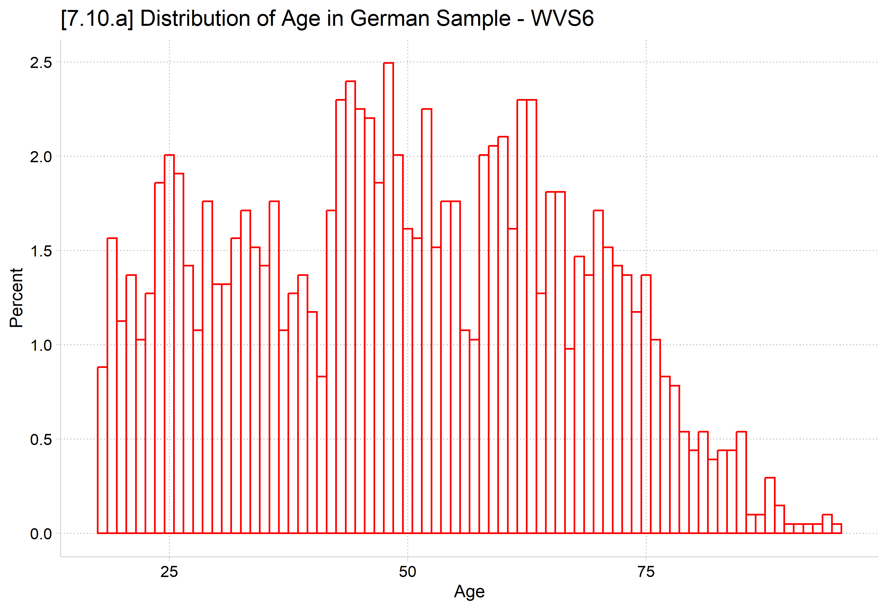

library(haven) # import Stata data and labels
library(dplyr) # data manipulation
library(ggplot2) # graphs
library(marginaleffects) # predictions and marginal effects
library(cleanplots) # graph scheme
cleanplots_defaults()
# World Values Survey 6
wvs <- read_dta("https://tdmize.github.io/data/data/lvm_wvs6.dta") |>
filter(age >= 18)
age_hist <- function(cntry, color, title) {
ggplot(filter(wvs, country == cntry), aes(x = age)) +
geom_histogram(aes(y = after_stat(100 * count / sum(count))), binwidth = 1,
fill = NA, color = color) +
labs(title = title, x = "Age", y = "Percent")
}
# 7.10.a - Germany
age_hist(276, "red", "[7.10.a] Distribution of Age in German Sample - WVS6")